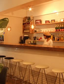

';
$header_obj->fncMenuHead_h1text = '日本ワーキング・ホリデー協会福岡オフィスへはJR天神駅から徒歩8分！初心者セミナーでは最新情報と正しい知識をみにつけることができます。';
$header_obj->display_header();
include('../../calendar_module/mod_event_horizontal.php');
?>
';
$header_obj->fncMenuHead_h1text = '日本ワーキング・ホリデー協会福岡オフィスへはJR天神駅から徒歩8分！初心者セミナーでは最新情報と正しい知識をみにつけることができます。';
$header_obj->display_header();
include('../../calendar_module/mod_event_horizontal.php');
?>
アクセス
福岡オフィス
| 住所 | 福岡セミナーは福岡オフィスで開催されます。 〒810-0004 福岡市中央区渡辺通4-6-20 星野ビル6階1号室 |
|---|---|
| 福岡オフィス周辺地図 |
mobilepage) { ?>
大きな地図で見る 大きな地図で見る |
| アクセス方法 | 【JR天神駅から徒歩8分】 駅から 天神駅南口 まっすぐ渡辺通りを薬院方面へ下る(南方面） ロフトを通り超え最初の1個目の信号をわたって最初の茶緑色の星野ビル６階です。 【JR天神駅から】⇒ 詳細はこちらから 【西鉄薬院駅から】⇒ 詳細はこちらから mobilepage) { ?> 大きな地図で見る |
| 連絡先 | お問い合わせ 無料セミナーのご予約はこちらから |
| 営業時間 | OPEN 11:00 - CLOSE 19:00 ※ご注意 個別でのカウンセリングをご希望の場合は、事前にご予約をお願い致します。 |
| スケジュール | 福岡オフィスでも、様々なセミナーを開催しております。 福岡のワーホリセミナーは東京のように毎日開催することはできませんが、アットホームなオフィスとスタッフで、皆さまを全力サポートすることが福岡ワーホリセミナーの特徴です。 東京セミナーの場合は全国様々な場所からセミナーに参加される方が多いですが、福岡ワーホリセミナーは福岡の若者を対象として開催される為、少人数で気取らず気軽に参加できますよ。 |
| カウンセラー紹介 |
|
| オフィスの様子 |   |
| 福岡スタッフから | 福岡オフィスに来られるお客様はいつも元気いっぱいで、お話をしているとこっちまで元気になります！
ワーキングホリデーの制度をもっと福岡の人に知ってもらう、そして皆さんが福岡から世界中に飛び立っていけるようにサポートをすることが私たちの使命です！
海外経験豊富なスタッフがいつでも貴方の来店をお待ちしていますよ！ワーホリに関する質問や相談だけでなく、海外へ行ってからの生活について、楽しかったこと辛かったこと、色々お答えしますので、是非一度オフィスへお越し下さいませ！ |
| manlyについて | CafeBar Manly カフェバー マンリー カフェ・レストラン「Manly（マンリー）」は、天神の今泉にオーストラリア・シドニーのビーチ沿いにあるような全面ガラス張りの可愛くて開放的な空間が魅力的な飲食店です。 普段は飲食店として経営されていますが、福岡オフィスではMnalyの一室をお借りしてワーホリセミナーなどの開催も行っております。 １５名様から貸切もできるのでアットホームなパーティーができるのもManlyの魅力の一つ。 留学・ワーキングホリデーのご相談だけでなく、女子会・デート・さまざまな記念日・お一人様のゆったりカフェなどそれぞれのシーンでお楽しみください。 CafeBar Manly カフェバー マンリー 福岡県福岡市中央区今泉1‐18‐55 http://www.hotpepper.jp/strJ000761870/ mobilepage) { ?> 大きな地図で見る 大きな地図で見る |